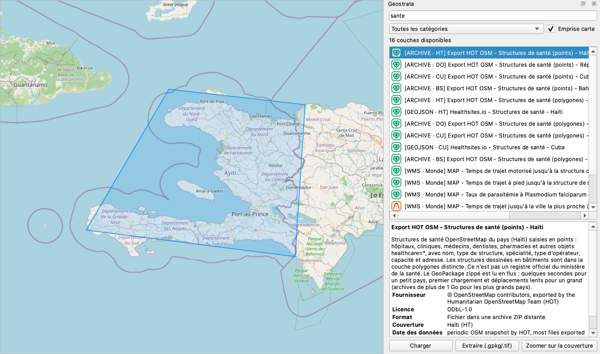

Trouvez les données ouvertes de la carte que vous regardez
Geostrata est une extension QGIS. Tapez un mot-clé dans la barre de recherche : elle liste les couches ouvertes qui couvrent la vue en cours, parmi un catalogue de 267. Appuyez sur Entrée pour en charger une.
Libre et gratuit (GPL). QGIS 3.28+ et 4.x sous Windows, macOS et Linux. Sans compte, sans serveur, sans paquet Python supplémentaire.
| Vous tapez | Ce qui se passe |
|---|---|
gst eau |
Liste les couches correspondant à « eau » qui couvrent la carte visible, les plus locales d'abord. |
gst eau !global |
Cherche dans tout le catalogue, où que soit votre carte. |
| Entrée | Ajoute la couche au projet sous forme de flux, avec son style et son attribution. |
| Maj+Entrée | Enregistre une copie découpée sur la carte visible, en .gpkg ou .tif local, utilisable hors ligne. |
Utilisation
-
Zoomez sur votre zone d'intérêt
Geostrata ne propose que les couches qui ont des données là où vous regardez. Une carte centrée sur Lyon obtient les données ouvertes de la métropole, les couches nationales françaises, puis les couches mondiales.
-
Cherchez avec le préfixe
gstOuvrez la barre de recherche et tapez
gstsuivi d'un mot-clé, en français ou en anglais :gst mnt,gst hopital,gst cadastre,gst orthophoto. Les accents sont facultatifs et les synonymes sont reconnus. -
Chargez le flux ou gardez une copie locale
Entrée charge la couche en flux depuis son fournisseur. Maj+Entrée la découpe sur la carte visible en tâche de fond et enregistre le fichier dans un dossier
geostrata_extractsà côté de votre projet.

La langue des couches, l'imagerie de l'OSM Editor Layer Index, les icônes et les catalogues d'équipe supplémentaires se règlent dans Internet → Geostrata → Paramètres.
Installation
Depuis le gestionnaire d'extensions (recommandé)
- Dans QGIS, ouvrez Extensions → Installer/Gérer les extensions… → Paramètres.
-
Sous Dépôts d'extensions, cliquez sur Ajouter… et collez cette URL :
https://lambda2.github.io/geostrata/plugins.xml - Dans l'onglet Toutes, cherchez Geostrata et cliquez sur Installer l'extension.
Les mises à jour arrivent ensuite par le gestionnaire d'extensions, comme pour toute autre extension.
Depuis un fichier ZIP
- Téléchargez geostrata.zip.
- Dans QGIS, ouvrez Extensions → Installer/Gérer les extensions… → Installer depuis un ZIP et sélectionnez le fichier.
Compiler depuis les sources
Nécessite Node.js 22 et Python 3. La commande compile le catalogue et copie l'extension dans votre profil QGIS.
git clone https://github.com/lambda2/geostrata.git
cd geostrata/packages/registry
npm install
npm run deploy:qgisCatalogue
Toutes les couches que l'extension peut charger. Cherchez ici pour vérifier ce qui existe sur votre zone avant d'installer.
Ajouter une couche
Le catalogue est un ensemble de fichiers YAML dans le dépôt. Une couche tient en une quinzaine de lignes : un nom, une URL, une licence, une couverture et quelques mots-clés. Si vous connaissez un jeu de données ouvert qui manque, décrivez-le dans une pull request ou ouvrez simplement un ticket.
Sous le capot
Les fichiers YAML sont validés puis compilés en un seul fichier SQLite doté d'un index plein texte et d'un index spatial. L'extension garde une copie locale de ce fichier : chaque recherche s'exécute sur votre machine en quelques millisecondes, sans aucun serveur. Une équipe peut publier son propre catalogue de la même façon et l'ajouter dans les paramètres.
Notes d'architecture Version du catalogue : chargement…